Уральский федеральный университет имени первого Президента России Б.Н. Ельцина
Магистратура по направлению 37.04.01 «Психология», департамент психологии Уральского гуманитарного института.
- Уровень
- Магистратура
- Квалификация
- Магистр
Квалификация
Психолог — профессия, в которой важно доверие. Поэтому здесь собраны все мои дипломы, удостоверения о повышении квалификации и сертификаты. Нажмите на документ, чтобы рассмотреть его в полном размере.
Магистратура по направлению 37.04.01 «Психология», департамент психологии Уральского гуманитарного института.
Факультет психологии, специальность «Педагогика и психология».
Дополнительное образование
Я продолжаю учиться, чтобы работать с опорой на современные научные данные.
Уральский федеральный университет, департамент психологии УГИ
Уральский федеральный университет, стажировка
Уральский федеральный университет, стажировка
Центр психолого-педагогической, медицинской и социальной помощи «Ладо»
Московский государственный психолого-педагогический университет
Уральский федеральный университет
Институт развития образования Свердловской области
Центр практической психологии Шестакова, семинар
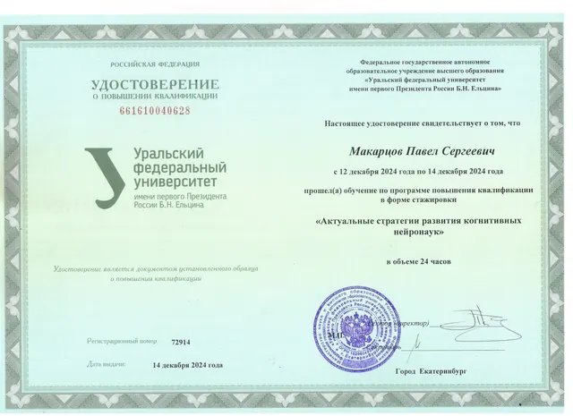
Актуальные стратегии развития когнитивных нейронаук — УрФУ, 2024— открыть в полном размере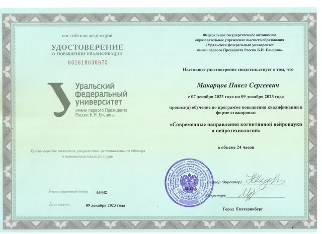
Современные направления когнитивной нейронауки и нейротехнологий — УрФУ, 2023— открыть в полном размере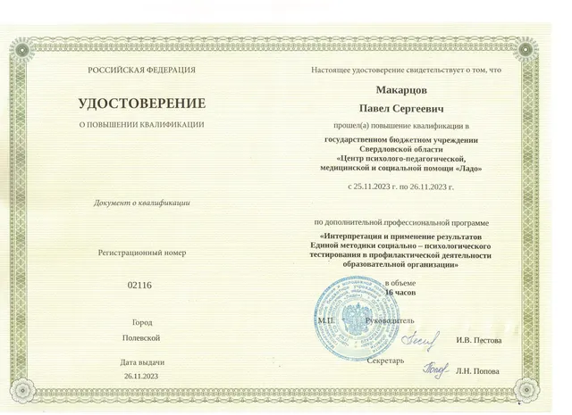
Единая методика социально-психологического тестирования — ЦППМСП «Ладо», 2023— открыть в полном размере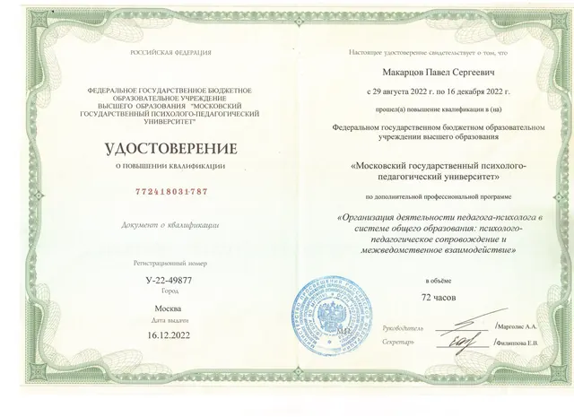
Организация деятельности педагога-психолога — МГППУ, 2022— открыть в полном размере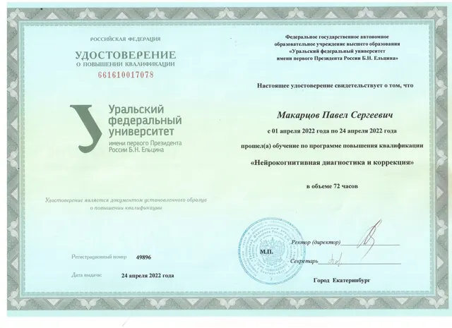
Нейрокогнитивная диагностика и коррекция — УрФУ, 2022— открыть в полном размере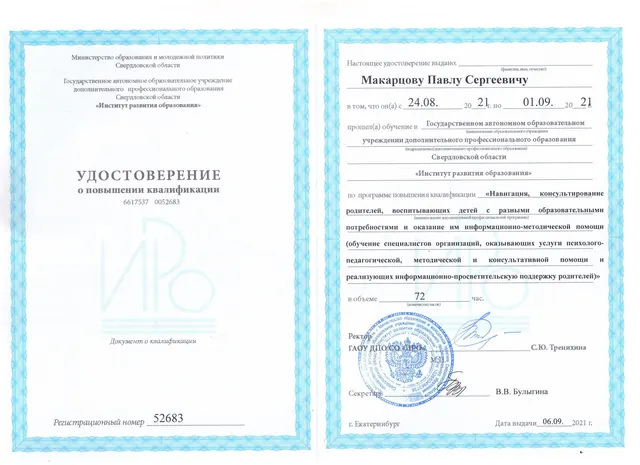
Консультирование родителей детей с разными образовательными потребностями — ИРО, 2021— открыть в полном размереПрофессиональное сообщество
Форумы, семинары и проекты, в которых я участвовал: психология образования, работа с семьями и детьми с особыми образовательными потребностями, супервизия и саморегуляция специалистов.
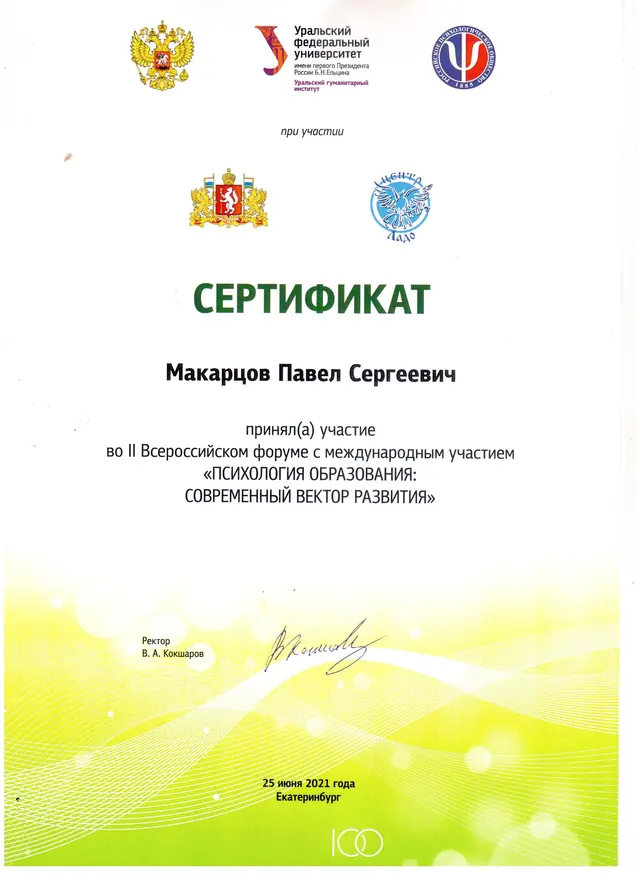
II Всероссийский форум «Психология образования» — УрФУ, 2021— открыть в полном размере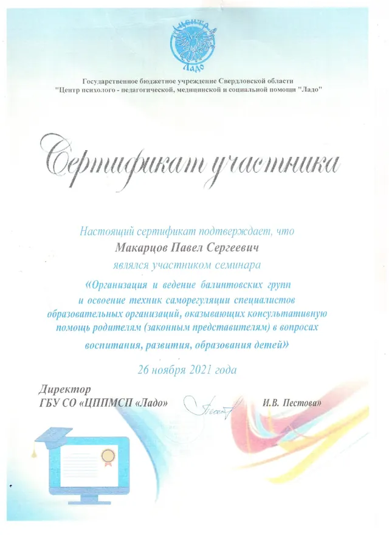
Балинтовские группы и техники саморегуляции — центр «Ладо», 2021— открыть в полном размере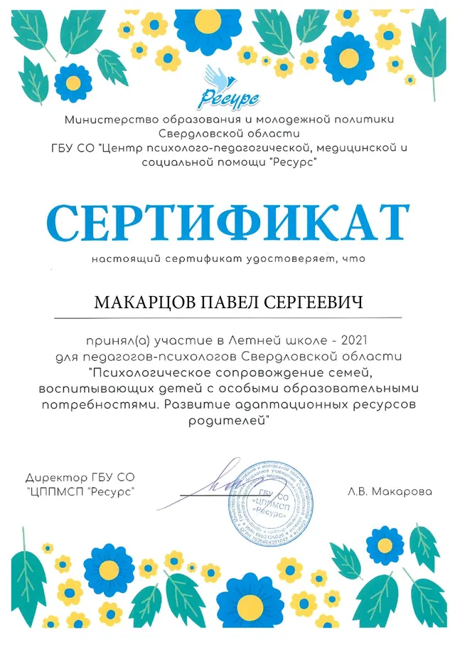
Летняя школа для педагогов-психологов — центр «Ресурс», 2021— открыть в полном размере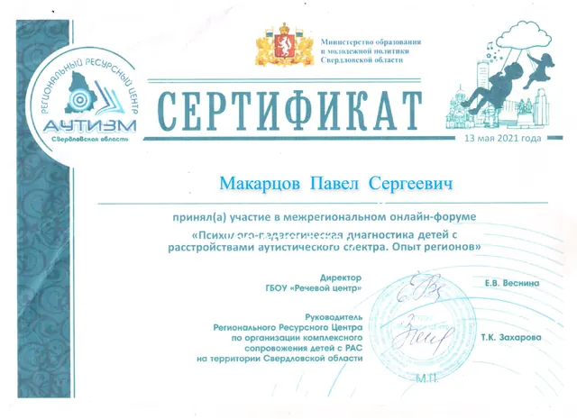
Диагностика детей с РАС — онлайн-форум, 2021— открыть в полном размере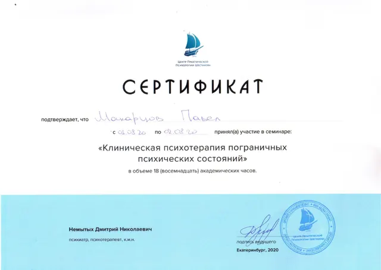
Клиническая психотерапия пограничных состояний — Центр Шестакова, 2020— открыть в полном размере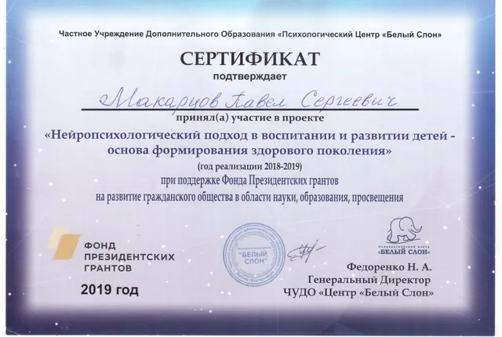
Нейропсихологический подход в воспитании детей — центр «Белый Слон», 2019— открыть в полном размереНапишите пару слов о том, что беспокоит, — я отвечу, предложу удобное время и формат: онлайн или очно в Екатеринбурге.